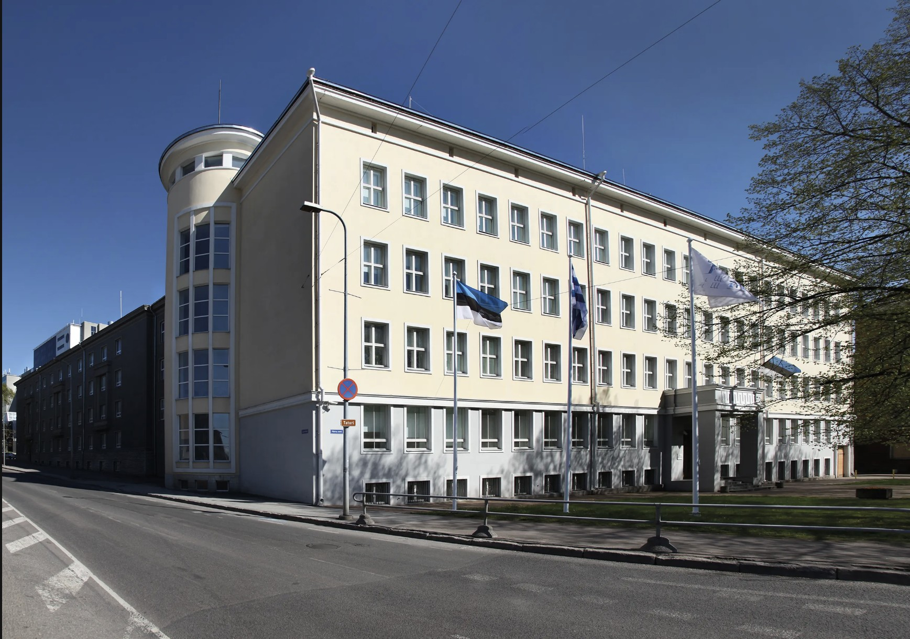
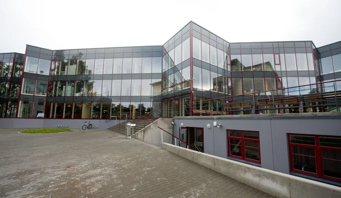
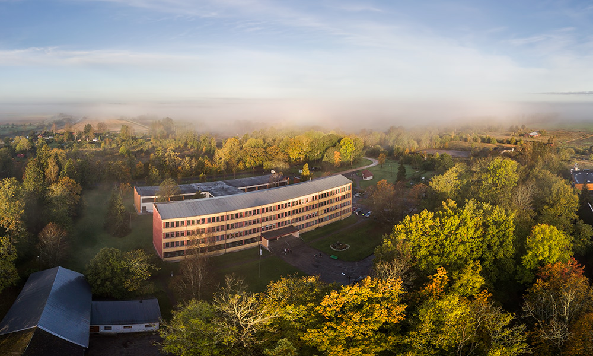

Mina olen Riho Sepp – sihikindel, järjepidev ja fokuseeritud tegutseja. Olen elus omandanud mitmeid erialasid ning pidev eneseareng on minu jaoks loomulik osa igapäevaelust. Mind paeluvad programmeerimine, kokandus ja digimaailm, ning püüan pidevalt oma teadmisi ja oskusi laiendada.
Olen kohusetundlik ja usaldusväärne, väärtustades nii meeskonnatööd kui ka iseseisvat tegutsemist. Meeskonnamängijana oskan teha koostööd ja toetada teisi, kuid suudan edukalt töötada ka iseseisvalt, lahendades keerulisi ülesandeid. Olen rahulik ja keskendunud ka pingelistes olukordades, suutes kiirelt kohaneda ja efektiivselt tegutseda.
Eriala: IT-süsteemide spetsialist
Siin omandasin põhjalikud teadmised IT-valdkonnast, keskendudes arvutivõrkudele, riistvarale ja kasutajatoele.
Eriala: Kokk (Tase 4)
Toiduvalmistamine on minu kirg, ja just siin sain süvendatud teadmised kokanduse kunstist ning köögitööst.
Suurköögikokk (01.09.2010 – 22.06.2013)
Konditer (26.08.2013 – 21.06.2014)
Erinevad kokandusalased erialad andsid mulle mitmekülgse teadmistepagasi toiduainete töötlemisest, menüü koostamisest ja suurköögi töökorraldusest.
